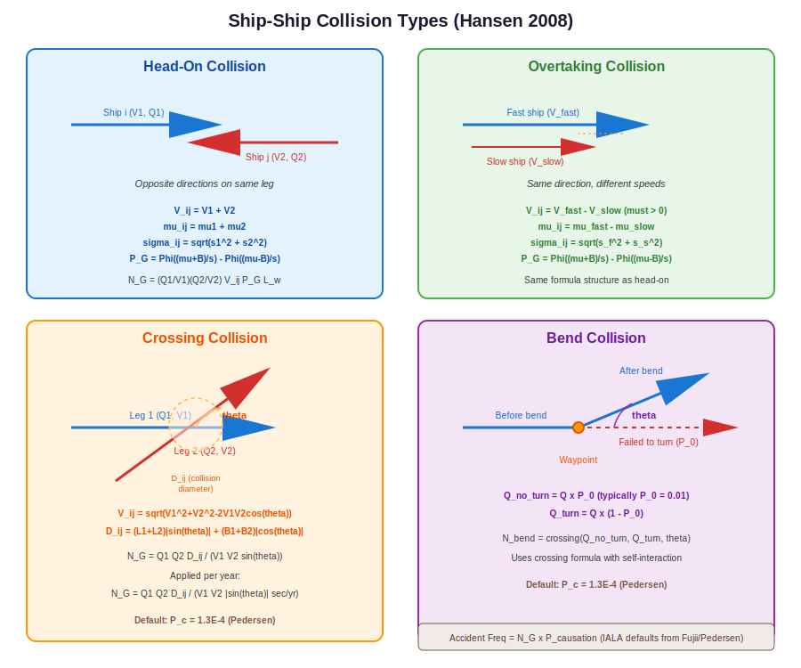

Ship-Ship Collision Calculations¶
This chapter describes OMRAT’s calculations for ship-ship collision risk. Four types of collision encounters are modelled: head-on, overtaking, crossing, and bend collisions, all based on the equations in Hansen (2008).
Overview¶
Ship-ship collisions occur when two vessels occupy the same space at the same time. The IWRAP methodology models this by calculating the geometric number of collision candidates – the expected number of close encounters per year assuming no evasive action – and then multiplying by a causation factor to get the actual accident frequency.
{kind=link}
The general formula is:
Where:
\(N_G\) = geometric collision candidates per year
\(P_C\) = causation probability (IALA default values)
Pipeline orchestrator: compute/ship_collision_model.py:526 – run_ship_collision_model()
Head-On Collisions¶
Head-on collisions occur between vessels travelling in opposite directions on the same leg. This is the classical encounter type for narrow shipping lanes.
Geometry¶
Two streams of traffic travel in opposite directions. The collision probability depends on the lateral overlap of their position distributions.
Equations (Hansen Eq. 4.2–4.4)¶
The geometric number of collision candidates is:
Where:
\(Q_1, Q_2\) = traffic volume in each direction (ships/year)
\(V_1, V_2\) = vessel speeds (m/s)
\(V_{ij} = V_1 + V_2\) = relative closing speed (m/s)
\(L_w\) = leg segment length (m)
\(P_G\) = geometric collision probability
The term \(Q/V\) converts from traffic frequency (ships/year) to traffic density (ships/m), accounting for the time ships spend on the leg.
The geometric collision probability is:
Where:
\(\mu_{ij} = \mu_1 + \mu_2\) – combined mean lateral distance (head-on: positions add because ships face opposite directions)
\(\sigma_{ij} = \sqrt{\sigma_1^2 + \sigma_2^2}\) – combined standard deviation
\(B_{ij} = (B_1 + B_2) / 2\) – average vessel breadth (collision width)
\(\Phi\) = standard normal CDF
compute/basic_equations.py:46 – get_head_on_collision_candidates()
# Relative closing speed for head-on collision
V_ij = V1 + V2
# Mean lateral distance between vessels (head-on: opposite directions)
mu_ij = mu1 + mu2
# Combined standard deviation
sigma_ij = sqrt(sigma1**2 + sigma2**2)
# Average vessel breadth (collision width)
B_ij = (B1 + B2) / 2
# Geometric collision probability using cumulative normal distribution
# P_G = Φ((μ_ij + B_ij)/σ_ij) - Φ((μ_ij - B_ij)/σ_ij)
if sigma_ij > 0:
P_G = norm.cdf((mu_ij + B_ij) / sigma_ij) - norm.cdf((mu_ij - B_ij) / sigma_ij)
else:
# If no variance, check if collision is certain (within beam)
P_G = 1.0 if np_abs(mu_ij) <= B_ij else 0.0
# Number of geometric collision candidates
# Hansen Eq. 4.2-4.4:
# N_G = (Q1/V1) × (Q2/V2) × V_ij × P_G × L_w
# Where Q/V converts frequency (ships/year) to density (ships/meter)
# This gives the correct dimension: collision candidates per year
# Avoid division by zero
if V1 <= 0 or V2 <= 0:
return 0.0
# Convert to ships per meter (density)
# Q is ships/year, V is m/s, so Q/V gives ships/year / (m/s) = ships * s / (year * m)
# We need to convert: ships/year / (m/year) to get ships/m
# V_year = V * seconds_per_year
seconds_per_year = 365.25 * 24 * 3600
density1 = Q1 / (V1 * seconds_per_year) # ships per meter
density2 = Q2 / (V2 * seconds_per_year) # ships per meter
# N_G = density1 × density2 × V_ij × P_G × L_w × seconds_per_year
# This gives collision candidates per year
N_G = density1 * density2 * V_ij * P_G * L_w * seconds_per_year
return N_G
Default causation factor¶
Overtaking Collisions¶
Overtaking collisions occur between vessels travelling in the same direction at different speeds. The faster vessel catches up to the slower one.
Geometry¶
Both vessels travel in the same direction. The collision probability depends on the speed difference (overtaking is only possible if \(V_{\text{fast}} > V_{\text{slow}}\)) and the lateral overlap of their distributions.
Equations (Hansen Eq. 4.5)¶
The formula is structurally identical to head-on, but with different relative speed and lateral offset:
Note
If \(V_{\text{fast}} \leq V_{\text{slow}}\), overtaking is impossible and the result is zero.
The geometric probability \(P_G\), combined standard deviation \(\sigma_{ij}\), and breadth \(B_{ij}\) are calculated identically to the head-on case.
compute/basic_equations.py:147 – get_overtaking_collision_candidates()
Default causation factor¶
Crossing Collisions¶
Crossing collisions occur at intersections where two legs cross at an angle \(\theta\). This is common at traffic separation scheme junctions, port approaches, and areas where multiple routes converge.
Geometry¶
Two traffic streams cross at angle \(\theta\). The collision zone is an area around the intersection point whose size depends on vessel dimensions and the crossing angle.
Equations (Hansen Eq. 4.6)¶
Where:
\(\theta\) = crossing angle (radians)
\(D_{ij}\) = collision diameter (metres)
\(V_1, V_2\) = vessel speeds on each leg
The relative speed uses the law of cosines:
The collision diameter accounts for the projected area of both vessels at the crossing angle:
Where \(L_1, L_2\) are ship lengths and \(B_1, B_2\) are ship beams.
Note
When \(\theta \to 0\) or \(\theta \to \pi\) (parallel or anti-parallel courses), \(\sin\theta \to 0\) and the crossing formula is not applicable. Use head-on or overtaking formulas instead.
compute/basic_equations.py:238 – get_crossing_collision_candidates()
# Handle edge cases for crossing angle
sin_theta = sin(theta)
if np_abs(sin_theta) < 1e-10:
# Parallel or anti-parallel courses - use head-on or overtaking instead
return 0.0
# Relative speed using law of cosines
# V_ij = √(V1² + V2² - 2×V1×V2×cos(θ))
V_ij = sqrt(V1**2 + V2**2 - 2 * V1 * V2 * cos(theta))
if V_ij < 1e-10:
return 0.0
# Collision diameter based on ship dimensions and crossing angle
# D_ij accounts for the projected area of both vessels
# D_ij = (L1 + L2) × |sin(θ)| + (B1 + B2) × |cos(θ)|
D_ij = (L1 + L2) * np_abs(sin_theta) + (B1 + B2) * np_abs(cos(theta))
# Number of geometric collision candidates
# Hansen Eq. 4.6: N_G = Q1 × Q2 × D_ij / (V1 × V2 × sin(θ))
# Note: The formula divides by V1 × V2 to convert frequencies to densities
# and includes sin(θ) to account for the crossing geometry
# Avoid division by zero
if V1 <= 0 or V2 <= 0:
return 0.0
# Convert frequency to "ships per year passing through intersection"
# For crossing, the formula is different from head-on/overtaking
# N_G = Q1 × Q2 × D_ij / (V1 × V2 × sin(θ)) × conversion_factor
# The conversion factor accounts for time: ships/year squared needs to become
# collision candidates/year
# Using dimensional analysis:
# Q1, Q2 in ships/year; D_ij in meters; V1, V2 in m/s
# Q1 × Q2 × D_ij / (V1 × V2) = ships²/year² × m / (m²/s²) = ships² × s² / (year² × m)
# We need to multiply by (1/seconds_per_year) to get ships/year
seconds_per_year = 365.25 * 24 * 3600
N_G = Q1 * Q2 * D_ij / (V1 * V2 * np_abs(sin_theta) * seconds_per_year)
return N_G
Default causation factor¶
Bend Collisions¶
Bend collisions occur at waypoints where a route changes direction. A vessel that fails to make the turn continues on its original heading and may collide with vessels that did turn correctly.
Geometry¶
At a waypoint, the route changes direction by angle \(\theta\). Most vessels turn correctly, but a small fraction \(P_0\) (typically 1%) fail to turn and continue straight.
Equations¶
The bend collision is then modelled as a crossing collision between the non-turning traffic and the turning traffic:
Where \(\theta\) is the bend angle (change in heading at the waypoint) and the crossing collision formula is applied with self-interaction (same ship type on both “legs”).
compute/basic_equations.py:331 – get_bend_collision_candidates()
Default causation factor¶
Default probability of not turning:
Calculation Workflow¶
The collision calculation for each leg proceeds as follows:
Extract traffic data: For each segment, extract all ship types, frequencies, speeds, and dimensions in both directions.
Pair ship types: For head-on and overtaking, pair every ship type \(i\) in direction 1 with every ship type \(j\) in direction 2 (or same direction for overtaking).
Calculate per-pair N_G: Apply the appropriate formula based on encounter type, using the specific vessel speeds, beams, and lateral distributions.
Sum over all pairs: The total geometric candidates is the sum over all ship type pairs.
Apply causation factor: Multiply by \(P_C\) to get accident frequency.
Display results: Results are shown in the UI as annual accident frequencies per collision type.
Summary of Equations¶
Type |
Relative Speed |
Lateral Offset |
Key Parameter |
|---|---|---|---|
Head-on |
\(V_1 + V_2\) |
\(\mu_1 + \mu_2\) |
Opposite directions |
Overtaking |
\(V_f - V_s\) |
\(\mu_f - \mu_s\) |
Same direction, \(V_f > V_s\) |
Crossing |
\(\sqrt{V_1^2+V_2^2-2V_1V_2\cos\theta}\) |
\(D_{ij}\) |
Crossing angle \(\theta\) |
Bend |
(crossing formula) |
(crossing formula) |
\(P_0 = 0.01\) |